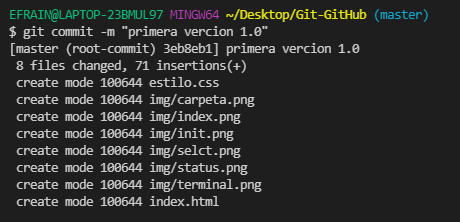

El comando git commit captura una instantánea de los cambios preparados en ese momento del proyecto. Las instantáneas confirmadas pueden considerarse como versiones "seguras" de un proyecto: Git no las cambiará nunca a no ser que se lo pidas expresamente.
La opción más común utilizada con git commit es la opción -m. La -m significa mensaje. Cuando se llama a git commit, es necesario incluir un mensaje. El mensaje debe ser una breve descripción de los cambios a los que se les está realizando commit. El mensaje debe estar al final del comando y debe estar envuelto entre comilla " ".
